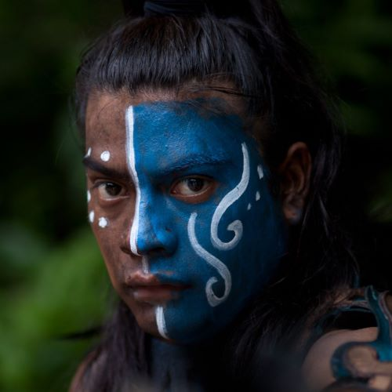
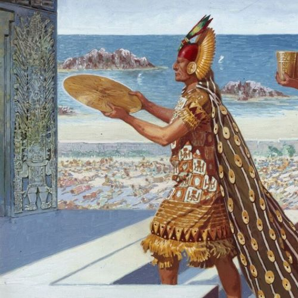
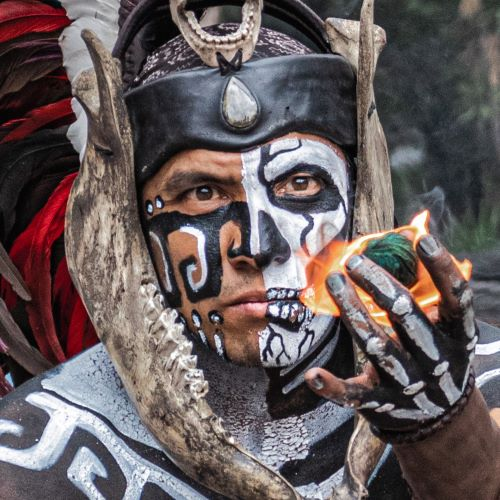

Mesoamerican History Museum
The Olmecs
The earliest known major Mesoamerican civilization formed in the area that is now known as Veracruz, Mexico.
They are most well known for their colossal heads which can be as tall as 10ft.
1600 - 400 BCE
The Mayans
A group of civilizations that formed in an area that comprises southeastern Mexico, Guatemala, Belize, Honduras, and El Salvador.
They are most well known for their architecture, mathmatics, calendar, and astronomical system.
250 - 1697 CE
The Inca Empire
The largest empire in pre-Columbian America including areas of Peru, Ecuador, Bolivia, Argentina, Columbia, and Chile.
They are most well known for their monumental stone architecture, road networks, textiles, and agriculture.
1438 - 1533 CE
The Aztec Empire
This was a cultural alliance of three Nahua city-states: Mexico-Tenochtitlan, Tetzcoco, and Tlacopan that formed in central Mexico.
They are most well known for their complex traditions (philosophical, mythological, and relion), architecture, and art.
1428 - 1521 CE
About the Museum
Established in 2023, The Mesoamerican History Museum seeks to share knowledge about the history of south America between the rise of the Olmec Civilization and the end of the Aztec Empire through preserved objects and art. You can view our collection by clicking any of the icons on the timeline above organized by Culture.